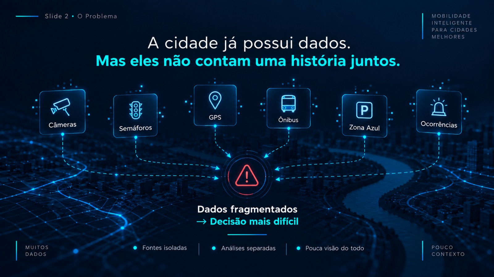
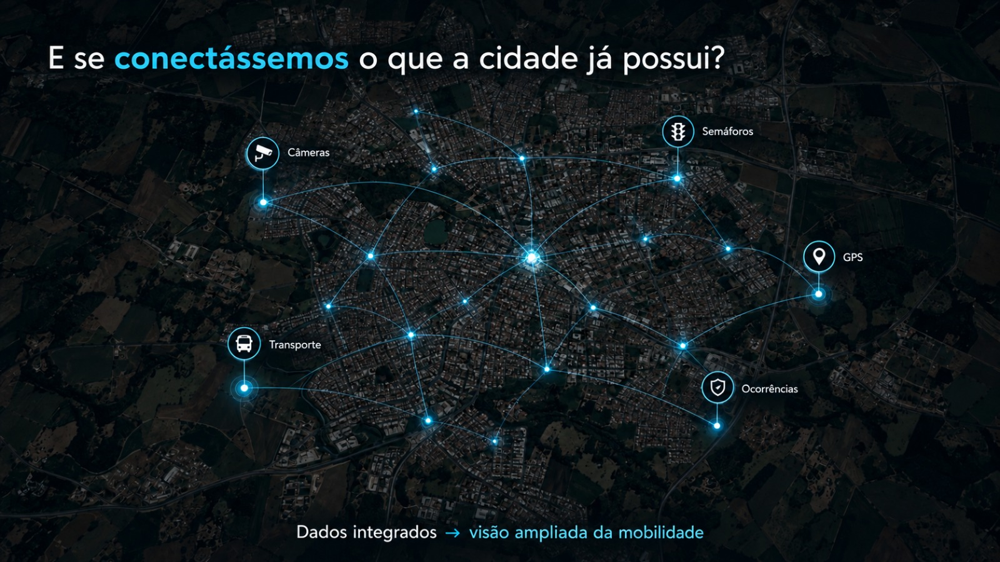
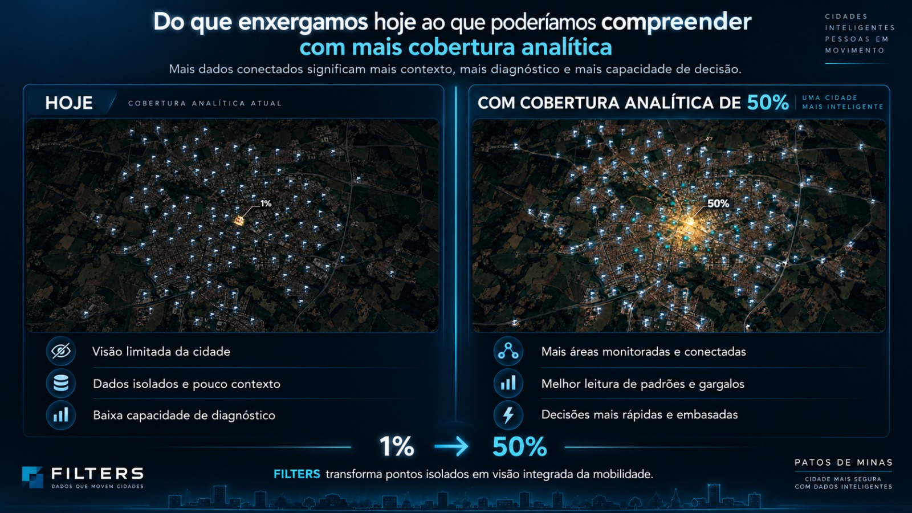

FILTER
Pitch · Patos de Minas
Mobilidade inteligente
Dados dispersos entram.
Decisões mais claras saem.
Uma leitura integrada da mobilidade, aproveitando a infraestrutura que a cidade já possui.
Material de apresentação · conceitos visuais
FILTER
02 · o problema
Hoje
A cidade já possui dados.
Mas eles não contam uma história juntos.
Fontes isoladas reduzem contexto e tornam a decisão mais difícil.

FILTER
03 · conexão
A oportunidade
E se conectássemos
o que a cidade já possui?
Câmeras, semáforos, GPS, transporte e ocorrências podem ampliar a leitura do todo.

FILTER
04 · cobertura
Mais contexto
Mais cobertura analítica.
Mais capacidade de decisão.
A imagem explica uma direção desejada; percentuais ilustrativos não são medição da cidade.
Simulação visual · não dado operacionalFILTER
05 · como funciona
Fluxo
Imagem bruta entra.
Informação útil sai.
Integração por API, filtragem, organização e análise para apoiar quem decide — sem prometer substituir a infraestrutura existente.